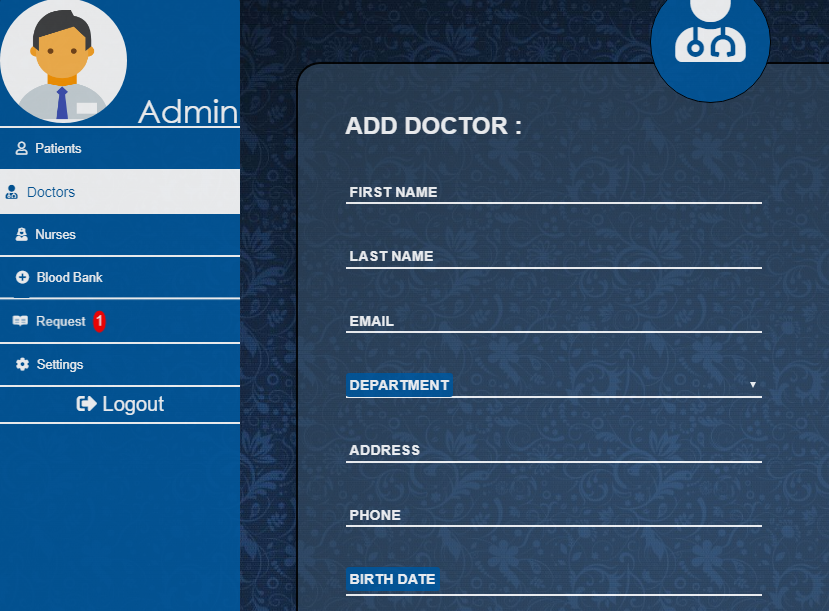

Projects
A System that allows you to register patients,doctors,nurses,and trainees and assign them to a specific department.Each doctor and trainee have an account and can view their patients.The admin can register,delete,view,and assign rooms and appoitments to patients
The purpose of this thesis is to design and implement a small system for University Registration . It is designed for the admin that could be the principle of the university or an employee and on the other side it helps also the students . This system will make things easier for the admin who will be supervising the student registration,course registration,and instructor regsitration . Note that this system is only used by the admin, and students.This system allows the admin to register a student with specific information.
The student in the other hand can login with his specific username and password and view the courses he registered and its information.
The purpose of this thesis is to design and implement a small system for finding a specific work. We are facing an era in Lebanon where job opportunities are becoming very low, graduated student or fresh workers may face difficulties in finding a job or there may be a job but its to far for them to know about. So this app shrinks the distance between the job opportunity and the worker.
This System is designed for workers and clients both. Workers can find requests about a specific job and clients can find a specific worker for a specific work they need to be done.
Users can easily sign up for an account by filling specific information the system want to share about them, else if they already have an account they can just login using their username and password chosen on their own.Clients can view their profile , place a request about a certain issue they want to be fixed by a professional and can view their notification in case a worker accepts their request. On the other side a worker can also view his profile, view the requests posted by clients that is related to his specific skills he registered with, and can view his notification in case a client accepts them for the job.
Clinic Information System will interest all people unconditionally and freely. Therefore,it permits users (physicians,patients) to register and access it and make interaction between them. The benefits of the Clinic Information System access to different physicians of specific specialties, access to accurate information about all patients in the clinic, spend less time spent on tracking down records and test results, physicians can check their appointment schedules anywhere and many other conveniences. Hence, the patients can save their time and the physician can easily organize the patient’s files and data. This will save the time of physicians so they could do some useful stuff other than waiting for a last minute patient. On the top of that, when the physician becomes available on the system,patients could easily find the physician information, the specialty and other relevant details.


Elderly Management System provides the benefits of enhanced administration and control, well organized relation between staff, cost control, reports generation, medical prescriptions and scheduling. It can be used in hospitals and clinics. This system provides automation of these activities such as retrieval facilities, updates and many other facilities and it requires less paper usage. Moreover, it provides efficiency and reduces work load.
- Coded with ASP.Net Core technologies using Visual Studio
- Database is Done using EntityFramework/MS SQL Server
